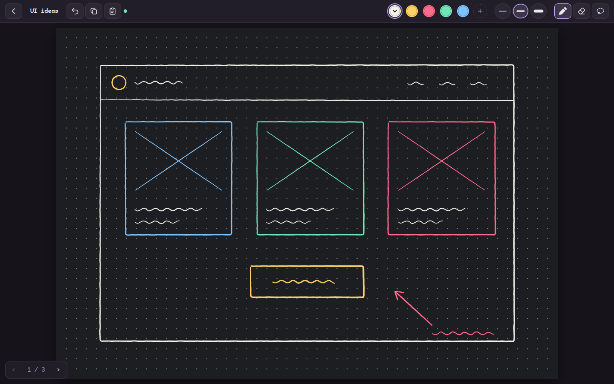
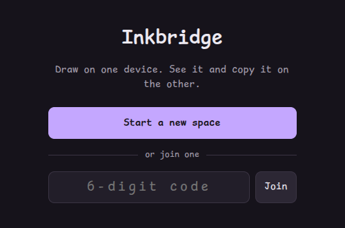
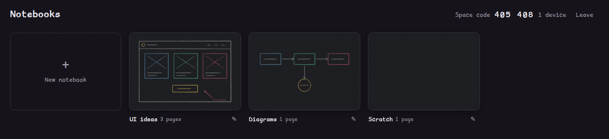
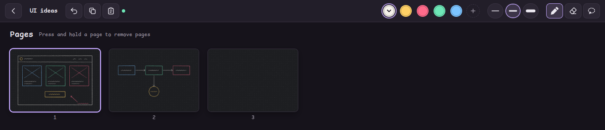
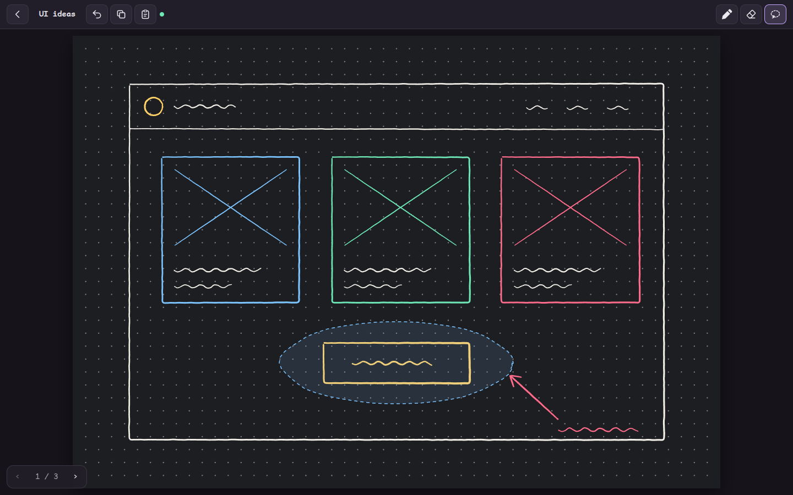
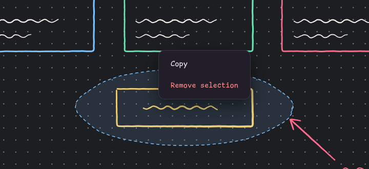
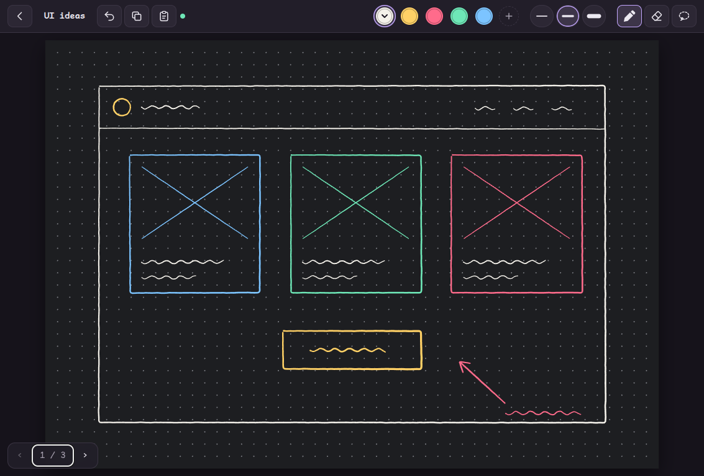

Inkbridge
A sketchpad that runs in the browser on an iPad and on your computer at the same time. Draw with the Pencil, and the ink appears on the computer as you draw. Press Copy, and the drawing is on the computer's clipboard, ready to paste into a prompt.

Why it exists
Inkbridge makes one path fast: sketch an idea on the iPad, then paste that sketch on the computer. The server runs on the computer, so Copy on the iPad reaches the computer's clipboard directly. No file transfer, no cloud account, and no browser tab needs to be open on the computer.
Get started
Copy this prompt into a coding agent on your computer, such as Claude Code. The agent installs Inkbridge, checks it, starts it, and tells you which address to open on your iPad.
Set up Inkbridge on this computer for me. Inkbridge is a sketchpad server from https://github.com/motionharvest/inkbridge that lets my iPad and this computer share drawings, and puts copied drawings on this computer's clipboard. 1. Check that Node.js 20 or later is installed. If it is not, tell me, and install the current LTS version once I agree. 2. Clone https://github.com/motionharvest/inkbridge.git into ~/inkbridge, unless I name another folder. 3. In that folder, run npm install, then npm test. Confirm that every test passes. 4. Read the README, especially "How Copy works". Check that the clipboard tool it names for this operating system is installed. Tell me what is missing before you install anything. 5. On Linux, ask me whether Inkbridge should start with the computer. If yes, run npm run install-service. If no, or on another system, run npm start and leave it running. 6. Tell me the address to open on this computer and the address to open on my iPad. The server prints both when it starts. The iPad must be on the same network. 7. In a few sentences, tell me how to pair the iPad with this computer and how to copy a drawing.
Or set it up by hand
Inkbridge needs Node.js 20 or later on the computer. The iPad needs only Safari.
git clone https://github.com/motionharvest/inkbridge.git
cd inkbridge
npm install
npm start
The server prints two kinds of address. Open the localhost address on the
computer. Open one of the "Other devices" addresses on the iPad. Both devices must be on the
same network.
Pair your devices
- On the first device, choose Start a new space.
- The notebook list shows a six-digit space code in its top right corner.
- On the second device, type that code and choose Join.
Each device remembers its space and rejoins it every time the app opens. On the iPad, Safari's Share → Add to Home Screen opens Inkbridge full screen, straight into your space.

Keep it running
On Linux, npm run install-service installs Inkbridge as a systemd user service,
so the server starts when the computer starts and restarts if it stops.
npm run uninstall-service removes it.
Notebooks and pages
A space holds notebooks, and a notebook holds pages. Every device follows the others: when any device opens a page, goes back to the notebook list, or opens the page grid, every other device does the same. The computer therefore shows what you see on the iPad without any input.

Swipe a finger from right to left for the next page. On the last page, pull past the edge until the New page ring closes, then lift your finger to add a page. Tap the page number in the bottom left corner to see every page at once.

Draw, select, and move
The Apple Pencil or a mouse draws. A finger never draws, so a resting palm leaves no marks; fingers swipe, pinch to zoom, and pan. Lines are smoothed as you draw. The Eraser removes only the ink inside a small circle and leaves the rest of each line.


Copy and paste
Copy renders the page as a PNG and sends it to the server, which puts it on the computer's clipboard. With a lasso selection, Copy copies only the area around the loop, at twice page resolution and without the dot grid.
Paste works the other way. The Paste button puts whatever is on the computer's
clipboard, an image or text, onto the page, where every device sees it and you can draw over it.
Ctrl+V or ⌘V pastes the clipboard of the device you press it on.
On a smaller iPad

Controls
| Input | Action |
|---|---|
| Apple Pencil or mouse | Draw, erase, or lasso, depending on the tool |
| One finger, swipe | Next or previous page |
| Two fingers, pinch | Zoom in or out |
| Two fingers, drag | Move the page; a page has no edges |
| Two fingers, double tap | Undo |
Ctrl+C / ⌘C | Copy the page, or the selection, to the computer |
Ctrl+V / ⌘V | Paste this device's clipboard onto the page |
Ctrl+Z / ⌘Z | Undo |
E, S | Switch to the Eraser or the Lasso and back |
← → | Previous or next page; → on the last page adds one |
The README lists every control.
Limits
The server has no authentication. Anyone on the same network who knows a space code can open that space, so run it on a network you trust.
Copy reaches the clipboard of the computer that runs the server. The Linux path is tested on X11. The macOS, Windows, and Wayland copy paths are written but not yet tested, and Paste from the computer's clipboard works on Linux only.
Pinch zoom and the Lasso are tested in a desktop browser. They are not yet tested on an iPad.
How it works
Every change is a small JSON message, such as "start a stroke" or "add a page". The browser and the server apply each message with the same JavaScript function, and Socket.IO relays it to the other devices in the space. The server saves each space as a JSON file on the computer. The README describes the design in full.